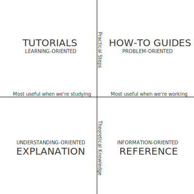

Style Guide¶
This document provides an overview of the style for the NOC documentation stored in this repository. The overarching goal of this style guide is to provide an accessible base style to ensure that our documentation is easy to read, simple to use, and straightforward to maintain.
Documentation Structure¶
Documentation is organized into four parts:

- Tutorials - A hands-on introduction to NOC for users.
- How-to Guides - Step-by-step guides. Cover key tasks and operations and common problems.
- References - Technical references.
- Explanations - Clarification and discussion of key topics.
Naming Conventions¶
This section contains guidelines on naming files, sections, documents and other document elements.
-
File naming convention:
-
For Markdown, all files should have a .md extension.
- Separate words in file names with hyphens (i.e. -.)
- For most documents, file names should have a terse one or two word name
that describes the material covered in the document.
Allow the path of the file within the document tree
to add some of the required context/categorization.
For example, it’s acceptable to have
/reference/sharding.mdand/admin/sharding.md. -
For tutorials, the full title of the document should be in the file name. For example,
/tutorials/removing-object-from-monitoring.md -
Phrase headlines and titles so users can determine what questions the text will answer, and material that will be addressed, without needing them to read the content. This shortens the amount of time that people spend looking for answers, and improves search/scanning, and possibly "SEO."
- Prefer titles and headers in the form of "Using foo" over "How to Foo." When using target references (i.e. references in documents), use names that include enough context to be intelligible through all documentation. For example, use "replica-set-secondary-only-node" as opposed to "secondary-only-node". This makes the source more usable and easier to maintain.
Style Guide¶
This includes the typesetting and English grammatical conventions that all documents in the manual should use. The goal here is to choose good standards, that are clear, and have a stylistic minimalism that does not interfere with or distract from the content. A uniform style will improve user experience and minimize the effect of a multi-authored document.
Spelling¶
Use American spelling.
Punctuation¶
- Use the Oxford comma. Oxford commas are the commas in a list of things (e.g. "something, something else, and another thing") before the conjunction (e.g. "and" or "or.").
- Use a single space after terminal punctuation, such as periods.
- Place commas and periods inside quotation marks.
Headings¶
Use title case for headings and document titles. Title case capitalizes the first letter of the first, last, and all significant words.
Verbs¶
Verb tense and mood preferences, with examples:
- Avoid the first person. For example do not say, "We will begin the backup process by locking the database," or "I begin the backup process by locking my database instance."
- Use the second person. "If you need to back up your database, start by locking the database first." In practice, however, it’s more concise to imply second person using the imperative, as in "Before initiating a backup, lock the database."
- When indicated, use the imperative mood. For example: "Back up your databases often" and "To prevent data loss, back up your databases."
- The future perfect is also useful in some cases. For example, "Creating disk snapshots without locking the database will lead to an invalid state."
- Avoid helper verbs, as possible, to increase clarity and concision. For example, attempt to avoid "this does foo" and "this will do foo" when possible. Use "does foo" over "will do foo" in situations where "this foos" is unacceptable.
Referencing¶
- To refer to future or planned functionality in NOC, always link to the GitLab case.
The Manual provides
\{\{ issue(N) \}\}macro to create a link to the issue. - Use relative Markdown links (
[text](../foo/bar.md)) to link different parts of document. - For non-object references (i.e. functions, operators, methods, database commands, settings) always reference only the first occurrence of the reference in a section. You should always reference objects, except in section headings.
- Structure references with the "why" first; the "link" second. For example, instead of this:
| | Use the [Enable Monitoring](enable-monitoring.md) | procedure to enable object's monitoring. |
Type this:
| | To enable the object's monitoring, see | [Enable Monitoring](enable-monitoring.md). |
General Formulations¶
- Contractions are acceptable insofar as they are necessary to increase readability and flow. Avoid otherwise.
-
Make lists grammatically correct.
-
Do not use a period after every item unless the list item completes the unfinished sentence before the list.
- Use appropriate commas and conjunctions in the list items.
-
Typically begin a bulleted list with an introductory sentence or clause, with a colon or comma.
-
The following terms are one word:
-
standalone
-
workflow
-
Use "unavailable," "offline," or "unreachable" to refer to a service instance that cannot be accessed. Do not use the colloquialism "down."
- Always write out units (e.g. "megabytes") rather than using abbreviations (e.g. "MB".)
Structural Formulations¶
- Each document must have exactly one "h1" (
#) block at the top of the document - There should be at least two headings at every nesting level.
Within an "h2" (
##) block, there should be either: no "h3" (###) blocks, 2 "h3" blocks, or more than 2 "h3" blocks. - Section headers are in title case (capitalize first, last, and all important words) and should effectively describe the contents of the section. In a single document you should strive to have section titles that are not redundant and grammatically consistent with each other.
- Use paragraphs and paragraph breaks to increase clarity and flow. Avoid burying critical information in the middle of long paragraphs. Err on the side of shorter paragraphs.
- Prefer shorter sentences to longer sentences. Use complex formations only as a last resort, if at all (e.g. compound complex structures that require semi-colons).
- Avoid paragraphs that consist of single sentences as they often represent a sentence that has unintentionally become too complex or incomplete. However, sometimes such paragraphs are useful for emphasis, summary, or introductions. As a corollary, most sections should have multiple paragraphs.
- For longer lists and more complex lists, use bulleted items rather than integrating them inline into a sentence.
- Do not expect that the content of any example (inline or blocked) will be self-explanatory. Even when it feels redundant, make sure that the function and use of every example is clearly described.
Markdown and Typesetting¶
-
For underlines associated with headers in RST, use:
-
#for heading level 1 or h1s. ##for heading level 2 or h2s.###for heading level 3 or h3s.-
####for heading level 4 or h4s. -
Use hyphens (
-) to indicate items of an ordered list.
Paths and Hostnames¶
- Use angle brackets to denote areas that users should input the relevant path, as in --dbpath
. - When including sample hostnames, use example.com, example.net, or example.org, which are reserved for documentation purposes. See RFC2606 and RFC6761 for more information.
Definitions¶
Use deflists extension to introduce definitions or key-value explanations.
Example
Term1
: Explanation1
Term2
: Explanation2
Examples¶
Use example admonition to add an example.
Example
<!-- prettier-ignore -->
!!! example "Example Name"
example text
Todos¶
Use todo admonition to denote work in progress
Example
<!-- prettier-ignore -->
!!! todo
To do something later